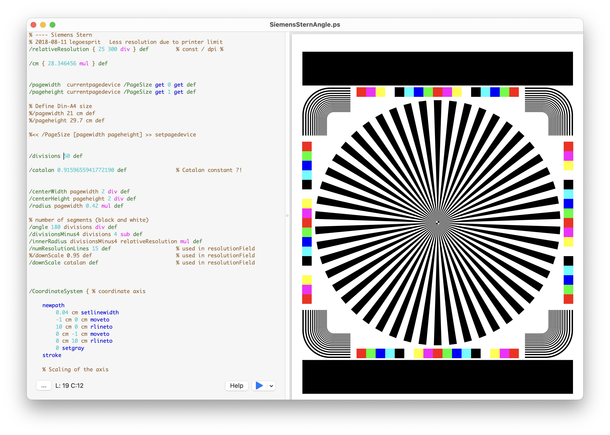
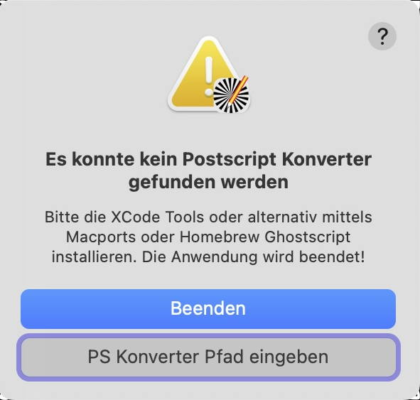

Diese Anwendung bietet ein einfaches Werkzeug zum Anzeigen und Konvertieren von Postscript-Dateien in PDF. Damit wird die Lücke geschlossen, die entstanden ist, nachdem die Preview-Anwendung unter Ventura kein Postscript mehr unterstützt..
Die Anwendung besitzt auf der linken Seite einen einfachen Postscript-Texteditor und auf der rechten Seite eine PDF-Anzeige. Ähnlich wie bei den Xcode Playgrounds können Sie wählen, ob die PDF-Grafiken auf der rechten Seite kontinuierlich oder nur manuell durch Drücken der blauen Play-Taste aktualisiert werden sollen.
Um die Anwendung zum ersten Mal zu starten, müssen Sie mit der rechten Maustaste auf das Anwendungssymbol klicken und auf Öffnen drücken. Dies ist darauf zurückzuführen, dass die Applikation von einem nicht registrierter Entwickler generiert wurde. Später solte ein Doppelklick entweder auf eine .ps-Datei oder die Anwendung sein.
Die App bietet einen einfachen Texteditor mit begrenzten Syntaxhervorhebungsfunktionen. Mit ihm können Postscript-Dateien angezeigt und in ihr entsprechendes PDF-Pendant konvertiert werden. Für die Anzeige und Konvertierung wird ein GhostScript-Konverter verwendet, der vor dem Ausführen der Software installiert werden muss ( Voraussetzungen ).
Falls kein geeigneter Postscript-Konverter gefunden wurde, wird die folgende Meldung angezeigt und die Anwendung geschlossen.
